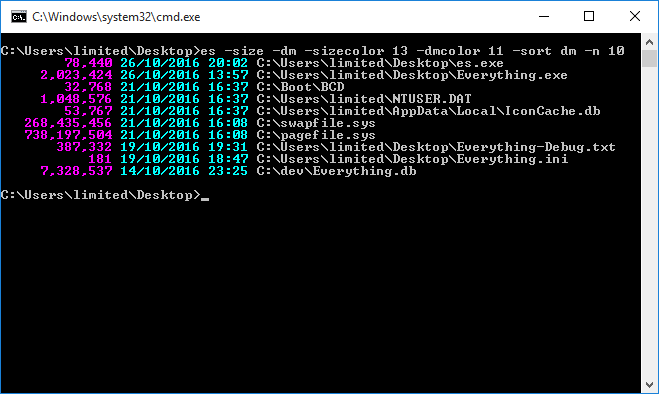
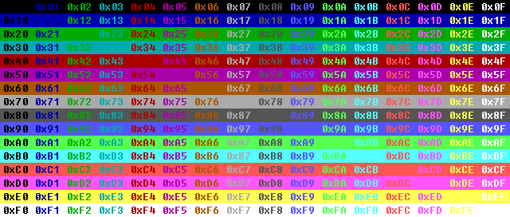

ES is a command line interface to search Everything from a command prompt.

ES can be downloaded from the Downloads page.
Everything must be installed and running.
es.exe [options] [search text]
[option]
Optional option.
<option>
Required option.
ES uses the Everything search syntax.
These options will work with any version of Everything.
-r <search>
-regex <search>
Search using regular expressions.
Escape spaces with double quotes.
-i
-case
Match case.
-w
-ww
-whole-word
-whole-words
Match whole words.
-p
-match-path
Match full path and file name.
-h
-help
Display this help.
-o <offset>
-offset <offset>
Show results starting from the zero based offset.
-n <num>
-max-results <num>
Limit the number of results shown to <num>.
-s
Sort by full path.
The following switches require Everything 1.4 or later.
-a
-diacritics
Match diacritical marks.
-name
-path-column
-full-path-and-name
-filename-column
-extension
-ext
-size
-date-created
-dc
-date-modified
-dm
-date-accessed
-da
-attributes
-attribs
-attrib
-file-list-file-name
-run-count
-date-run
-date-recently-changed
-rc
Show the specified column. The full path and name column will be used if no name, path or full path and name column is specified.
Columns are displayed in the order specified.
-sort name
-sort path
-sort size
-sort extension
-sort date-created
-sort date-modified
-sort date-accessed
-sort attributes
-sort file-list-file-name
-sort run-count
-sort date-recently-changed
-sort date-run
-sort-name
-sort-path
-sort-size
-sort-extension
-sort-date-created
-sort-date-modified
-sort-date-accessed
-sort-attributes
-sort-file-list-file-name
-sort-run-count
-sort-date-recently-changed
-sort-date-run
-sort name-ascending
-sort name-descending
-sort path-ascending
-sort path-descending
-sort size-ascending
-sort size-descending
-sort extension-ascending
-sort extension-descending
-sort date-created-ascending
-sort date-created-descending
-sort date-modified-ascending
-sort date-modified-descending
-sort date-accessed-ascending
-sort date-accessed-descending
-sort attributes-ascending
-sort attributes-descending
-sort file-list-file-name-ascending
-sort file-list-file-name-descending
-sort run-count-ascending
-sort run-count-descending
-sort date-recently-changed-ascending
-sort date-recently-changed-descending
-sort date-run-ascending
-sort date-run-descending
-sort-name-ascending
-sort-name-descending
-sort-path-ascending
-sort-path-descending
-sort-size-ascending
-sort-size-descending
-sort-extension-ascending
-sort-extension-descending
-sort-date-created-ascending
-sort-date-created-descending
-sort-date-modified-ascending
-sort-date-modified-descending
-sort-date-accessed-ascending
-sort-date-accessed-descending
-sort-attributes-ascending
-sort-attributes-descending
-sort-file-list-file-name-ascending
-sort-file-list-file-name-descending
-sort-run-count-ascending
-sort-run-count-descending
-sort-date-recently-changed-ascending
-sort-date-recently-changed-descending
-sort-date-run-ascending
-sort-date-run-descending
Specify the sort. Results are sorted by name ascending if not specified.
-sort-ascending
-sort-descending
Set sort order. For example, sort by size ascending: -sort size -sort-ascending
If the sort order is not specified: size is sorted largest first, dates latest first and run count largest first, All other sorts are sorted alphabetically.
-instance <name>
Connect to the unique Everything instance name.
See Multiple Instances for more information.
-highlight
Highlight results.
Highlighting many results can decrease the performance of "Everything".
-highlight-color <color>
<color> can be one of the following color codes:

Highlight color 0x00-0xFF.
The default highlight color is 0x0a (light Green on Black).
-csv
-efu
-txt
-m3u
-m3u8
Change display format.
Use > to redirect to a file or | to pipe to another application.
See -export options below to also write to a file.
-export-csv <out.csv>
-export-efu <out.efu>
-export-txt <out.txt>
-export-m3u <out.m3u>
-export-m3u8 <out.m3u8>
Export to a file. No output is displayed on screen.
-export-efu will only export indexed information. Combine -export-efu with -size, -date-modified, -date-created and/or -attributes to gather this information.
UTF-8 encoding is used for exporting as txt and csv.
-size-format <format>
Format can be one of the following values:
| Value | Description |
|---|---|
| 0 | Auto |
| 1 | Bytes (default) |
| 2 | KB |
| 3 | MB |
-date-format <format>
Format can be one of the following values:
| Value | Description |
|---|---|
| 0 | System format (default) |
| 1 | ISO-8601 |
| 2 | Windows FILETIME in decimal |
| 3 | ISO-8601 as UTC |
-pause
-more
Pause after each page of output.
-hide-empty-search-results
Don't show any results when the search is empty.
-empty-search-help
Show help when no search is specified.
-timeout <milliseconds>
Timeout after the specified number of milliseconds to wait for the Everything database to load before sending a query. The default timeout is 0 milliseconds.
-filename-color <color>
-name-color <color>
-path-color <color>
-extension-color <color>
-size-color <color>
-date-created-color <color>
-dc-color <color>
-date-modified-color <color>
-dm-color <color>
-date-accessed-color <color>
-da-color <color>
-attributes-color <color>
-file-list-filename-color <color>
-run-count-color <color>
-date-run-color <color>
-date-recently-changed-color <color>
-rc-color <color>
<color> can be one of the following color codes:
Set the column color 0x00-0xFF.
-filename-width <width>
-name-width <width>
-path-width <width>
-extension-width <width>
-size-width <width>
-date-created-width <width>
-dc-width <width>
-date-modified-width <width>
-dm-width <width>
-date-accessed-width <width>
-da-width <width>
-attributes-width <width>
-file-list-filename-width <width>
-run-count-width <width>
-date-run-width <width>
-date-recently-changed-width <width>
-rc-width <width>
Set the column width 0-200.
-size-leading-zero
-run-count-leading-zero
Format the number with leading zeros, use with -no-digit-grouping.
-no-digit-grouping
Don't group numbers with commas.
-path <path>
Search for subfolders and files in path.
-parent-path <path>
Search for subfolders and files in the parent of path.
-parent <path>
Search for files with the specified parent path.
/o[sort]
DIR style sorts.
sort must be one the following sorts:
| Sort | Description |
|---|---|
| N | Name ascending. |
| -N | Name descending. |
| S | Size ascending. |
| -S | Size descending. |
| E | Extension ascending. |
| -E | Extension descending. |
| D | Date modified ascending. |
| -D | Date modified descending. |
/ad
Folders only.
/a-d
Files only.
/a[attributes]
DIR style attributes search.
attributes can be any one or more of the following attributes:
| Attribute | Description |
|---|---|
| R | Read only. |
| H | Hidden. |
| S | System. |
| D | Directory. |
| A | Archive. |
| V | Device. |
| N | Normal. |
| T | Temporary. |
| P | Sparse file. |
| L | Reparse point. |
| C | Compressed. |
| O | Offline. |
| I | Not content indexed. |
| E | Encrypted. |
To exclude an attribute prefix it with a -
For example, find files with no read-only attribute set: es.exe /a-r
The Directory attribute is determined by the result being a file or folder in Everything, not the file attribute. Search for attributes:d for the true directory attribute.
-set-run-count <filename> <count>
Set the run count for the specified filename. No search is performed.
-inc-run-count <filename>
Increment the run count for the specified filename by one. No search is performed.
-get-run-count <filename>
Display the run count for the specified filename. No search is performed.
-get-result-count
Display the total result count for the specified search.
No filenames are displayed. -n is ignored.
-save-settings
-clear-settings
Save or clear settings. No search is performed.
Settings are stored in es.ini in the same location as your es.exe.
ES does not have access to bookmarks or filters.
Export all mp3 files to an Everything file list named mp3.efu
es.exe *.mp3 -export-efu mp3.efu
Show the top 10 largest files:
es.exe -sort size -n 10
Show the last 10 modified files:
es.exe -sort dm -n 10
Highlight the search terms foo bar
es.exe foo bar -highlight
Make ES show the size column, date modified column and set some pretty colors and make them the default settings:
es.exe -size -dm -sizecolor 0x0d -dmcolor 0x0b -save-settings
ES can return one of the following errorlevel codes:
| Errorlevel | Description |
|---|---|
| 0 | No known error, search successful. |
| 1 | Failed to register window class. |
| 2 | Failed to create listening window. |
| 3 | Out of memory. |
| 4 | Expected an additional command line option with the specified switch. |
| 5 | Failed to create export output file. |
| 6 | Unknown switch. |
| 7 | Failed to send Everything IPC a query. |
| 8 | Everything IPC window not found. Please make sure the Everything search client is running. |
Dashes (-) inside switches can be omitted, for example, instead of using -no-digit-grouping, use: -nodigitgrouping
Switches can also start with a /
Use double quotes to escape spaces and switches.
Switches can be disabled by prefixing them with no-, eg: -no-size.
Use ^ to escape \, &, |, >, < and ^.
ES source code is included with the download.